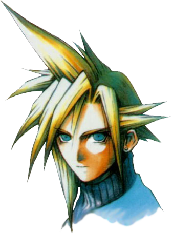

This is a list of the main party members of Final Fantasy VII who were studied for the project. Descriptions have been taken directly from Square Enix's website for Final Fantasy VII on PC.
CREDITS: All images are from their respective portraits in the Final Fantasy VII menu. The transparents themselves are from here, except for Vincent who is from here.

Cloud Strife
Job: Mercenary (ex-member of SOLDIER) | Age: 21 | Weapon: Sword | Height: 5'7" | Birthdate: 19th August | Birthplace: Nibelheim | Blood-Type: AB
The main character in FINAL FANTASY VII. Originally a member of SOLDIER, he is now a mercenary who will take any job. After being hired by AVALANCHE, he gradually gets caught up in a massive struggle for the life of the planet. His enormous sword can cut almost anything into two.
Aerith Gainsborough
Job: Flower Merchant | Age: 22 | Weapon: Rod | Height: 5'3" | Birthdate: 7th February | Birthplace: Icicle Lodge | Blood-Type: O
Young, beautiful, and somewhat mysterious, Aerith met Cloud while selling flowers on the streets of Midgar. She decided to join him soon after. Her unusual abilities allow her to heal the party, but she seems more interested in the deepening love triangle between herself, Cloud and Tifa.
Tifa Lockhart
Job: Bar Hostess, AVALANCHE Member | Age: 20 | Weapon: Glove | Height: 5'4" | Birthdate: 3rd May | Birthplace: Nibelheim | Blood-Type: B
Bright and optimistic, Tifa always cheers up the others when they're down. But don't let her looks fool you, she can decimate almost any enemy with her fists. She is one of the main members of AVALANCHE. She and Cloud were childhood friends, and although she has strong feelings for him, she would never admit it.
Barret Wallace
Job: Leader of AVALANCHE | Age: 35 | Weapon: Gun-arm | Height: 6'4" | Birthdate: 15th December | Birthplace: Corel Village | Blood-Type: O
Head of the underground resistance movement, AVALANCHE, Barret is fighting the mega-conglomerate Shinra, Inc. which has monopolized Mako energy by building special reactors to suck it out of the planet. Barret depends on brute strength and his “Gun-arm” to see him through. His wife died in an accident several years ago, and he now lives with his daughter Marlene.
Although you'd never know it by looking at her, Yuffie comes from a long line of Ninja. She forced herself into the group just to get a “certain something”. She's sneaky, arrogant and “way” selfish. But with her super shuriken and her special skills, there isn't anyone else you'd rather have on your side in a fight.
Cid Highwind
Job: Pilot | Age: 32 | Weapon: Spear | Height: 5'8" | Birthdate: 22nd February | Birthplace: Unknown | Blood-Type: B
Cid is a tough-talking, warm-hearted old pilot who hasn't forgotten his dream. There's no better pilot by air or sea. He believes that someday he'll be the first man in space. With his handmade spear and knowledge of machinery, he throws himself into any attack regardless of the danger.
A mystical man, stern and upright while at the same time dark and mysterious. His past connection with Shinra, Inc. is what made him join Cloud and the others. He may seem frail at first glance, but hidden inside his body lurks a fearsome power.
Just as his name implies, he is an animal with fire-red fur. But under his fierce exterior is an intelligence surpassing that of any human's. His sharp claws and fangs make him good at close-range fighting, but other than that, not much is known about him. It's not event certain that “Red XIII” is his real name. A real enigma.
Cait Sith rides around on the back of a huge stuffed Mog he magically brought to life. Megaphone in hand, he's always shouting orders and creating dopey attacks. When his slot machine attack works, the enemy lines look like an overturned toy box. His hobby is fortune telling, but like his personality, it's pretty unreliable.
{kind=link}